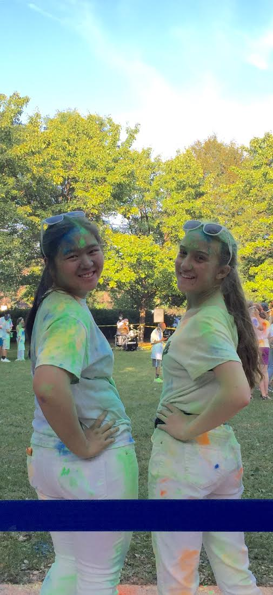

We are Ida C. and Barbara C., and we created this project as a part of Girls Who Code's 2016 Summer Immersion Program. We are both rising juniors at Whitney M. Young Magnet High School, and share an interest in math and computer science. Our LinkedIn accounts can be found here (Ida) and here (Barbara).

Graphic Design is our passion.